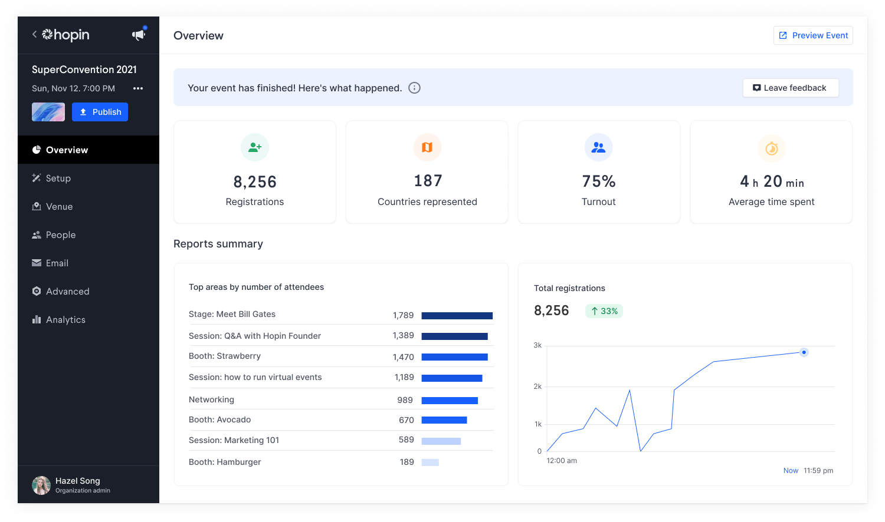
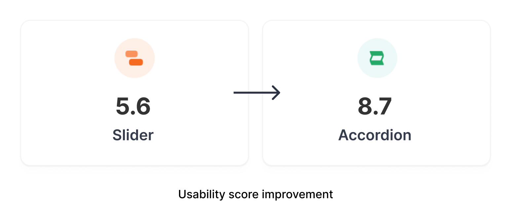
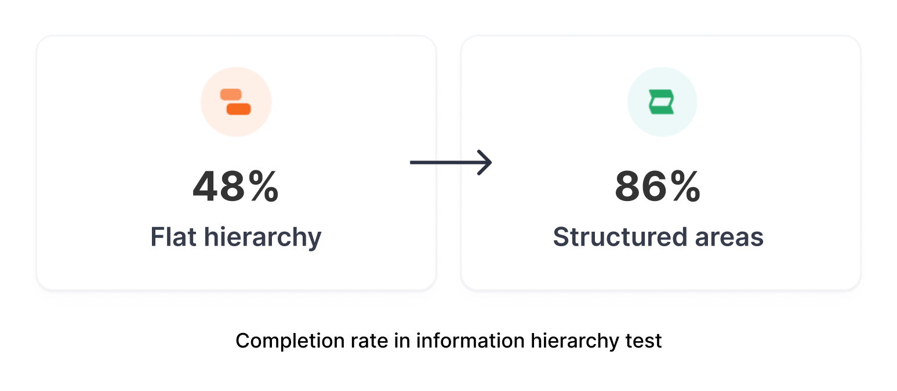
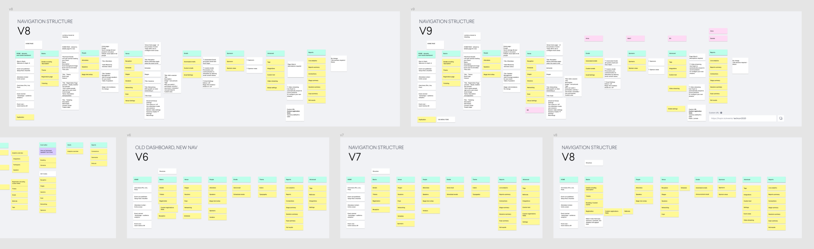
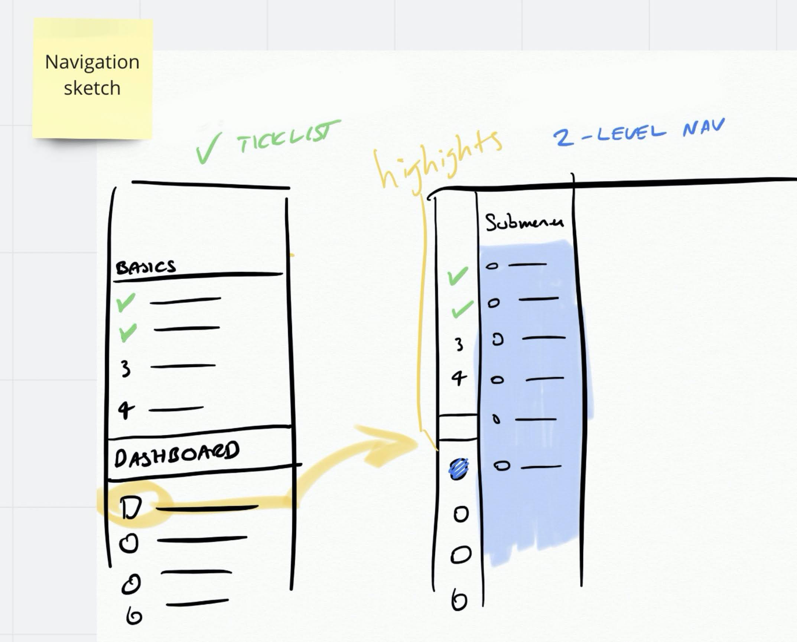
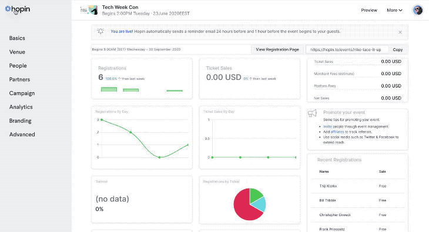
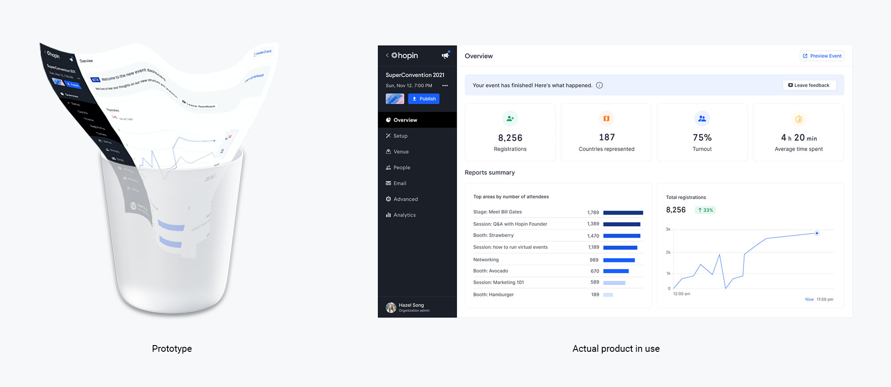
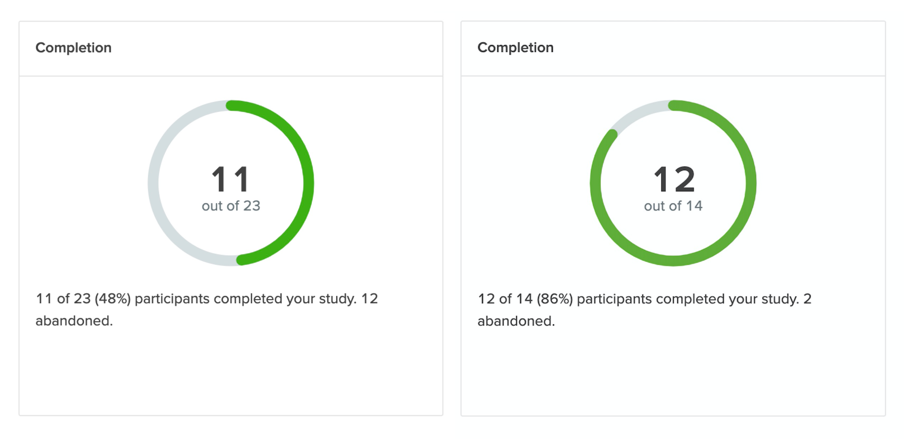
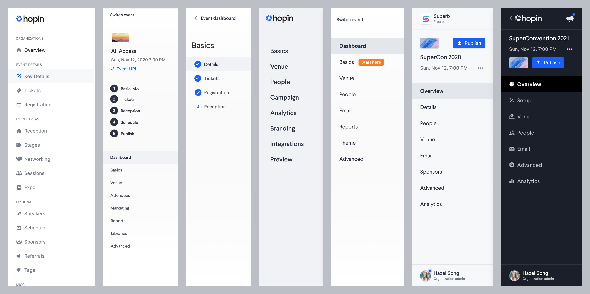
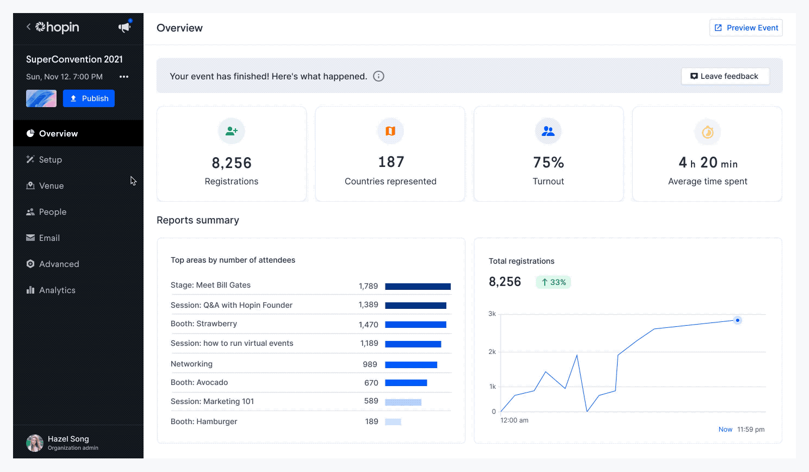

Designing complex products isn’t easy.
As a junior designer, I made the mistake more than once of jumping straight into a design app and pushing pixels, without first considering the bigger picture.
As I learned my craft working with large tech companies and small startups, I discovered six principles that now inform the work that I do—and which guide the efforts of the broader Hopin Design team.
In this article, we explain these product design principles and and illustrate how they show up in the work we do at Hopin—specifically, through a redesign of our event setup dashboard that we completed in early 2021.

Design Impact
There’s no point having design principles if they aren’t serving the user and the business.
My work drove a step change in usability for our platform, and was described by VP of Product & Design David Aubespin as being a “key factor in driving $40.2 million worth of sales” in Q4 2020.


6 Design Principles at Hopin
- Solve a real problem
- Consider the structure
- Collaborate for strength
- Design just enough
- Test your solutions
- Design is never done
As the market leader in virtual and hybrid events, Hopin has built its reputation on stellar user experience.
Our event product has two sides—one for event organizers, the other for attendees.
Since releasing the first version of our event platform in 2019, we have listened to our customers and evolved our products to ensure that they meet the specific and changing needs of our audience.
Here’s how:
1. Solve a real problem
As digital product designers, job is to solve real business and user problems through design.
In practice
When we began thinking about doing a major overhaul of our event setup interface in early 2021, we knew we’d have to get tactical about which problems we would try to solve. So we began by identifying the key problems our users reported. We spoke to:
- Event organizers—both those who ran events every day, as well as those who were new to our platform
- Our Customer Success team
- Our Support team
We also dug into our chat help system to identify the kinds of problems that kept recurring. We categorized and filtered the feedback, to identify three key problems with our event product:
Key problems
- “It’s hard to know where to start when setting up an event.”
- “How do I know when I’m done?”
- “I can’t find [that thing] that I need!”
Having identified the problems, we were now able to begin considering and developing solutions. We worked in two main teams — my team concentrated on the third problem, while an “onboarding” team focused on the first two.
2. Consider the structure
Design goes deep. When solving any complex problem, Jessie James Garrett’s Elements of User Experience is a useful touchstone. I consider what level I’m working on — and if it’s the right level to tackle the challenge I face.

In Practice
As we listened to our event organizers and observed newcomers setting up events, it became obvious that we needed to dig deep into the structure to fix the fundamental problems.
For business reasons, we had to move quick.
Given a limited timeframe, we couldn’t reconsider the entire event creation strategy or scope—but by working our way up the stack, we determined we could rethink the structure of the navigation (i.e., the “information architecture”).
Starting at this deeper, more fundamental level was a guarantee that our work would have more leverage and make more of a difference to the resulting user experience.
One key piece of feedback we received was that pages were hard to find in our current menu. While the menu was divided into sections, it looked like a flat hierarchy.
So our first task was to create a better way to categorize menu items and consider better ways we could lay these out.
We began this process with a series of short sessions with the Design team, Customer Success, and Support — to make sure that we had a logical and consistent structure for our navigation.
Working at an abstract level, we were able to iterate fast and build detail in our designs—without getting bogged down by layout ideas.

Once we had a structure in place, we then reviewed the skeleton. How could we create a more consistent and clear experience at this level?
We looked at competitors and comparators, including some niche products that only a few of us knew. Drawing on a wide range of influences gave us a competitive advantage, because we needed a diversity of ideas for inspiration.

Finally, we looked at what many people think of when they hear “design” — the surface level of the interface.
We finessed details of typography and iconography, gave everything a visual polish, made sure our components were consistent with our wider design system, and checked color accessibility across all areas.

3. Collaborate for strength
Design is seductive. It’s easy to get distracted by the surface layer of shiny interfaces, smooth animations, light, and color.
Indeed, as a designer working on digital products, it’s easy to silo yourself in an ivory tower. However, it is essential to remember that your work is part of something larger.
Your design always exists as part of a larger ecosystem—and your designs can always be improved.
As much as I may think my design solutions are great, I know from many years of experience that running them by other designers will always make them stronger.
Moreover, this process of collaboration, and the learning that emerges, makes a design team stronger — producing better results throughout an entire product.
4. Design just enough
It’s essential to keep in mind that the designs you work on every day are essentially just digital trash. They will be discarded once the real thing — the actual product—is in use. The designs are mere blueprints.

In practice
While designing solutions for the navigation and structure, we designed just enough to test the idea.
After our pivot to an accordion layout, we built a prototype of just the first few dashboard areas to get a feel for the interaction. Did it make sense with the first few areas? Was this enough to indicate it would work elsewhere?
With these basic requirements satisfied, we were able to comfortably discard our prototype and start building the real thing.
5. Test your solutions
A key principle in software development: Success is what happens when you’ve failed every other way.
You will always fail the first few times you make anything new — so choose where, and make it quick.
Learn fast, fix the problems, and move on. (One example from real-world products: WD-40 was the 40th attempt at making a water displacer.)
In Practice
We needed to learn quickly what worked and what didn’t.
Working with our researcher, we created a quick information architecture test . How would our current flat hierarchy perform against one that was divided into structured areas?
The results were surprising and amusing. While “time on task” was roughly the same, 48% of our participants completed the test of the current flat hierarchy format, compared to 86% of those asked to find items in our new, structured list format.

This gave us confidence that we were on the right track. So we built out a detailed prototype of the entire dashboard, so we could test the interaction model and layout. Would it make sense in practice?

The feedback was fantastic . Users loved the look and feel of the prototype. Everything felt fast and better structured.
However, in practice we soon ran into the key problem mentioned in part 2: Your designs are not the product.
Our prototype whipped through pages at speed, delivering an instant response as users navigated. Unfortunately, in practice, we were unable to deliver the same speed in the actual product.
When we put a coded prototype out as a beta for testing, we added a feedback form. A common theme quickly emerged : It felt too slow, as the navigation model required a page refresh each time the user went “back” to home.
We needed a quick pivot to solve this problem — and, fortunately, through our collaborative process and exposure to many ideas, we had one ready. Which brings me to the 6th principle.
6. Design is never done
To paraphrase Paul Valéry: “Design is never finished, only abandoned”.
In Practice
Once we had our new layout available in the actual working product — we really started to learn how effective our solution was. Did it solve our user problems? How could we improve it?

Our quick pivot to an accordion model solved the problem of speed. A page refresh was now only required when selecting a menu item. Our users loved the new layout, the clarity of the tables, and the overall structure.
Design is really never done, but this constant process of improvement is what makes good products great.
By applying these design principles to our work, we are able to work methodically and maintain a consistent level of quality at scale.
As a diverse and global team, through close collaboration, we are able to create designs that are better than any one of us could create alone.
Ultimately, the test of our work is whether it delivers real value to our customers. Design does not exist in a vacuum. Its efficacy and quality is only discernible when it is out in world and our users begin interacting with it.
Impact
There’s no point having design principles if they aren’t serving the user and the business.
My work drove a step change in usability for our platform, and was described by VP of Product & Design David Aubespin as being a “key factor in driving $4.2 million worth of sales” in Q4 2020.
Testimonials
Lauren Harris
Lead product designer, NikeI had the pleasure of working with Bill on projects across various media and devices. He helped us find the best patterns for compelling UI designs (mobile / desktop), improved our UX research approach, and delivered intuitive, data-driven prototypes.
Bill is an extremely passionate designer and a lovely colleague – a real team player, reliable with deadlines but always there for a friendly chat during a coffee break. Plus, he built his own hardware / software interface for his live electronic rock band!”